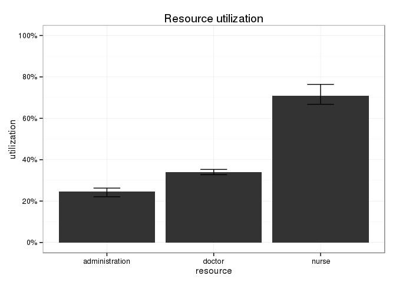
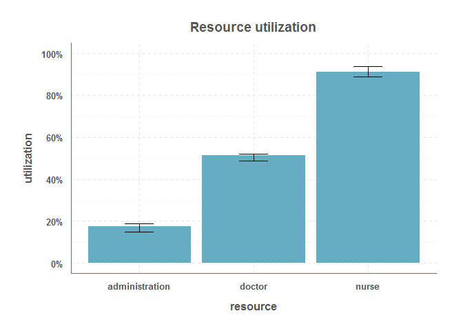
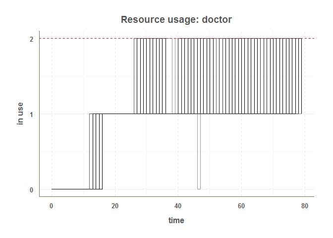

by Bart Smeets (bartsmeets86@gmail.com) & Iñaki Ucar (i.ucar86@gmail.com)
simmer is under heavy development and its internals and syntax can still change extensively over the coming time
simmer is a discrete event package for the R language. It is developed with my own specific requirements for simulating day-to-day hospital proceses and thus might not be suited for everyone. It is designed to be as simple to use as possible and uses the chaining/piping workflow introduced by R6 classes.
The installation requires the devtools package to be installed.
devtools::install_github("Bart6114/simmer")Please note that the package contains some C++ code and you thus need a development environment to build the package (e.g. Rtools for Windows). If you don’t want to build the package yourself and you’re on Windows you could try a pre-built binary package here.
First load the package.
library(simmer)Set-up a simple trajectory. Let’s say we want to simulate a ambulatory consultation where a patient is first seen by a nurse for an intake, next by a doctor for the consultation and finally by administrative staff to schedule a follow-up appointment.
t0 <- Trajectory$new("my trajectory") $
## add an intake activity
seize("nurse", 1) $
timeout(function() rnorm(1, 15)) $
release("nurse", 1) $
## add a consultation activity
seize("doctor", 1) $
timeout(function() rnorm(1, 20)) $
release("doctor", 1) $
## add a planning activity
seize("administration", 1) $
timeout(function() rnorm(1, 5)) $
release("administration", 1)The time-out duration is evaluated dynamically, so it must be a function. This means that if you want an static value instead of a probability, let’s say 3, you need to enter function() 3.
When the trajectory is know, a simulation environment can be build. In the below example, an environment is instantiated and three types of resources are added. The nurse and administration resource, each with a capacity of 1, and the doctor resource with a capacity of 2. We specify that we want to replicate the simulation 100 times using the rep argument.
simmer <- Simmer$new("SuperDuperSim", rep=100) $
add_resource("nurse", 1) $
add_resource("doctor", 2) $
add_resource("administration", 1) $
add_generator("patient", t0, function() rnorm(1, 10, 2))The last method above extends the simulation environment by adding a generator of arrivals following the trajectory t0, wich are activated with an interval of about 10 minutes (a gaussian of mean=10 and sd=2).
The simulation is now ready for a test run; just let it simmer for a bit. Below, we specify that we want to limit the run-time to 80 time units using the until argument.
simmer$run(until=80)It is possible to resume the execution simply by specifying a longer run-time. Below, we continue the execution until 120 time units.
simmer$run(until=120)Also, if the simulation is heavy and you want to parallelize the execution of replicas, you can add the argument parallel=n, where n is the number of threads required (this functionality requires the package doParallel). Let’s restart the execution from the beginning with 2 threads.
simmer$reset() $
run(until=120, parallel=2)The branch method introduces the possibility of introducing probability in whether or not to include a branch in a trajectory. The following example shows how a trajectory can be build with a 50-50 chance for the arrival to undergo the second time-out activity.
t1 <- Trajectory$new("trajectory with a branch") $
seize("server", 1) $
branch(prob=0.5, merge=T, Trajectory$new("branch1") $
timeout(function() 1)
) $
branch(prob=0.5, merge=T, Trajectory$new("branch2") $
timeout(function() rexp(1, 3))
) $
release("server", 1)The argument merge indicates whether the arrival must continue executing the activities after the branch or not.
After you’ve left it simmering for a bit (pun intended), we can have a look at the overall resource utilization. The top and bottom of the error bars show respectively the 25th and 75th percentile of the utilization across all the replications. The top of the bar shows the median utilization.
plot_resource_utilization(simmer, c("nurse", "doctor","administration"))
It is also possible to have a look at a specific resource and its activity during the simulation.
plot_resource_usage(simmer, "doctor", types="server", steps=T)
In the above graph, the individual lines are all seperate replications. The step lines are instantaneous utilization and the smooth line is a running average. You can also see here that the until time of 120 was most likely lower than the unrestricted run time of the simulation. It is also possible to get a graph about a specific replication by simply specifying the replication number. In the example below the 6th replication is shown.
plot_resource_usage(simmer, "doctor", 6, types="server", steps=T)
One can also query the raw resource monitor data.
head(
simmer$get_mon_resources()
)## time server queue system resource replication
## 1 11.79944 0 0 0 nurse 1
## 2 19.22237 1 0 1 nurse 1
## 3 27.37484 1 1 2 nurse 1
## 4 29.50780 1 0 1 nurse 1
## 5 40.57005 1 1 2 nurse 1
## 6 42.65353 1 0 1 nurse 1Next we can have a look at the evolution of the arrivals’ flow time during the simulation. In the below plot, each individual line represents a replication. A smoothline is drawn over them. All arrivals that didn’t finish their entire trajectory are excluded from the plot.
plot_evolution_arrival_times(simmer, type = "flow_time")
Similarly one can have a look at the evolution of the activity times with type = "activity_time" and waiting times with type = "waiting_time".
It is also possible to extract the arrival monitor data.
head(
simmer$get_mon_arrivals()
)## name start_time end_time activity_time finished replication
## 1 patient12 11.79944 51.52696 39.72753 TRUE 1
## 2 patient13 19.22237 65.72227 38.34743 TRUE 1
## 3 patient14 29.50780 77.37782 36.80777 TRUE 1
## 4 patient15 42.65353 94.06661 38.67649 TRUE 1
## 5 patient16 52.08704 111.67755 41.21065 TRUE 1
## 6 patient12 10.63929 50.44282 39.80353 TRUE 2DOCUMENTATION TO BE CONTINUED
For bugs and/or issues: create a new issue on GitHub.
Other questions or comments: bartsmeets86@gmail.com